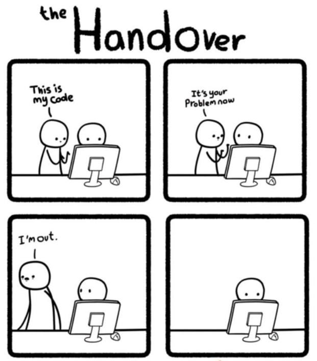

Documentation
Documentation is a love letter that you write to your future self.
— Damian Conway, computer scientist, a public speaker, and the author of several books.
Remember: if your project or process is not well-documented to the point of being largely reproducible - it’s incomplete!
Why Document?
Documentation is a critical to improving transparency, clarity, and consistency of products and process. When done well, documentation can significantly reduce the amount of time wasted by team members, partners, the public (and ourselves!) who are looking for answers, institutional knowledge, or process and eliminate unnecessary duplication of work.

Detailed documentation of every aspect of a project and all phases of the data and project life cycle - from planning, to data sources, analysis methods, code, workflows, and even why decisions were made - is critical because it helps ensure that data, results, and products are meaningful, accessible, and actionable for our teams, partners, communities, and the public. Documentation in our data-intensive workflows can also help identify areas of improvement in how we work with ourselves and others, and make it easier to identify solutions to project sticking points and create other paths forward. Moreover, clear documentation allows us to pick up where we left off, or easily transition projects from one person or team to another when roles change thus preventing the loss of incredibly valuable institutional knowledge that only comes with time and experience. Without proper documentation, it can be difficult for others to have confidence in, ground truth/validate, or build on existing work.
Individuals and teams that invest the time to create clear and complete documentation tend to find projects to be a bit more manageable because they have resources to guide them. Over the long-term, that investment into clear and comprehensive documentation can increase the reproducibility, transparency, and accessibility of their work. All of this, in turn, can make it easier to collaborate with internal and external partners, help build relationships and trust with partners and communities impacted by the project thus helping to operationalize equity into our projects, products, and process.
Documenting with an Equity Lens
There are abundantly clear benefits to ourselves, our teams, and our partners when we invest in comprehensive and clear documentation. As you embark on your documentation journey, be sure to also consider what documentation would be helpful for others outside of your normal or core project team, keep the below considerations in mind, and remember to document with an equity lens.
Reproducibility: Reproducibility is a vital aspect of documentation that plays a key role in advancing and operationalizing equity into our data-intensive work. When our work is documented in a way that allows ourselves and others to replicate process and findings, it ensures that folks can access and validate the data as part of their understanding and workflows.
Transparency: Transparency in documentation is particularly vital for building trust with communities that have historically and to this day experience a lack of openness or consideration by government. By prioritizing transparent documentation, we can clearly communicate and connect the dots for folks when it comes to how we work, what data and methods we use, what that data tells us and the reasoning and actions we take throughout our processes, thus better enabling communities to understand how and why we make certain decisions and how all of that may impact them and others. This openness can empower current and potential future partners and communities to engage meaningfully with our work, ensuring that their voices are respected and needs are considered in ongoing and future work.
While we want to make as much of our process and products open and transparent as possible, this does not mean the EVERYTHING should be made public. It’s important to balance the need to keep confidential and private information secure while also making process and products open, transparent, and publicly available. This balance varies by project.
What’s important is for teams to discuss what this balance looks like for them and act, document, and share accordingly.
Accessibility: When our is projects, process, and products are presented in ways that center accessibility— such as offering offline materials, using multiple languages, or documenting in plain language — it lowers barriers and makes it easier for individuals to participate and engage. Prioritizing accessibility in our documentation not only increases access to vital information but also demonstrates a genuine commitment to inclusivity and respect for diverse experiences.
Collaboration: If documentation exists and that documentation is comprehensive, reproducible, transparent, and accessible then (and only then!) will our projects, products, and process help us rebuild trust, repair relationships and/or begin to build new ones, which ultimately make it easier for communities to want to engage, collaborate and meaningfully contribute to our processes, or better yet, co-create products and resources with us. Prioritizing and investing in documentation, and creating it with an equity lens, can help us bridge gaps in communication and understanding, ultimately fostering trust, collaboration, and relationships with communities that have had the experience of being excluded or otherwise overlooked in our projects, products, and process.
Comprehensive documentation using an equity lens can be yet another tool we can use to operationalize equity and advance more equitable outcomes in our work.
What to Document
Poor documentation is rarely used or referred to after it is written, and feels like (and often is) a waste of time.
Great documentation is an investment that is built over time. No one documents something and gets everything down perfectly the first time. Teams with great documentation decide progress is better than perfection and make time to iteratively improve, build on, and evolve what is documented over time so that it continues to be comprehensive and useful beyond when it was first drafted. This is why it’s critical for teams to think through:
- what the team will document
- how documentation will be developed
- where documentation will be stored
- how it will be shared (or not)
- who will be responsible for creating and maintaining documentation over time
When teams are beginning their documentation discussions and process, they should expect to document (almost) everything in some form, and plan to invest time accordingly. A list of things to consider documenting is provided in the graphic below.
Trying to document everything below all at once can feel overwhelming and impossible. That’s because it is!
Remember that perfection is the enemy of good. Focus on making iterative progress and improvements given your teams priorities, bandwidth, and capacity.
With time and consistent investment in documentation, your team can have everything below (and more!) documented comprehensively and in ways that advance and operationalize equity.
![Illustration of the four documentation categories: Team, Process, Technical, and User, with a list of items to document under each category. Team documentation includes: Onboarding & Offboarding Resources (e.g., Useful Background Information, Values, Culture, Expectations, Codes of Conduct, Roles, Responsibilities, Administrative Resources, Where to find things (e.g. data, products)), Training Materials, and Project Management (Meeting Agendas, Notes, Tracking Systems). Process documentation includes: Strategic Documents, Planning Documents (e.g., Data Management Plans, Engagement / Outreach Plans, Quality Assurance Project Plans (QAPPs), Work Plans, Timelines, Budget and Contracts), Standard Operating Procedures (SOPs), and Product Review & Feedback Process. Technical documentation includes: Data Life Cycle Workflow Diagrams, Data Architecture & Relationships, Metadata, Data Dictionaries, Data & Product Governance (e.g., Data Categorization, Security Checklists, Code / Repository Access Settings), GitHub Repositories (including Source code with inline comments, ReadMe files, Code outputs). User documentation includes: Guides, Tutorials, Product Help, FAQs, Process Reporting (e.g., Updates, Responses to Feedback, Reasoning Behind Key Decisions), Fact Sheets, Reports, Publications, Event Materials (e.g., Agendas, Notes/Summaries, Recordings, Slides, Event Summaries).](images/documentation_list.png)
Additional Resources
- Openscapes Pathway - Join Openscapes at the Water Boards to learn more and build your Team Pathway!
- Schema.org – Promoting common data structures on the internet
- Accessibility tips using Markdown (Smashing Magazine)
- Writethedocs.org, plus a piece on documenting for beginners
- Templates for documenting on GitHub (e.g., on a ReadMe)
- Creating and maintaining a Data Dictionary
- US EPA Guidance for Content Item Metadata in ArcGIS Online
- Document code through comments and #tidydata
- GitHub projects best practices
Examples of Documentation
- NOAA NMFS Open Science Resources - A Compilation of Resources and Experience to Support Open Science Communities in NOAA Fisheries
- NOAA Fisheries Integrated Toolbox - Browse software tools for NOAA Fisheries scientific work
- NASA Earthdata Cloud Cookbook - Supporting NASA Research Teams’ Migration to the Cloud
- Openscapes Approach Guide - Guidance for Openscapes leaders on how to implement Openscapes programs and approaches